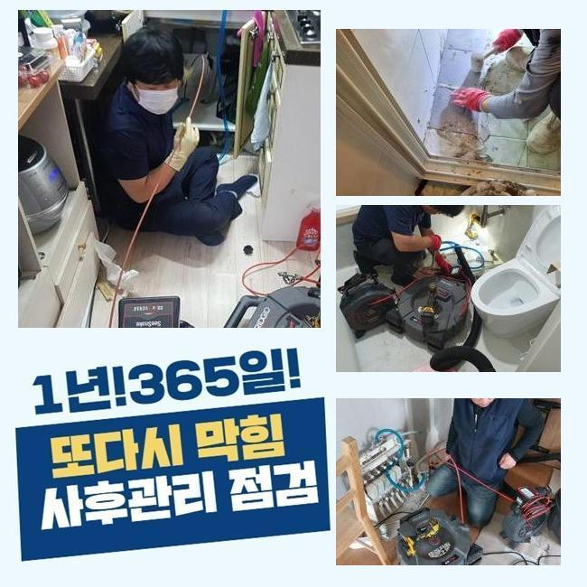
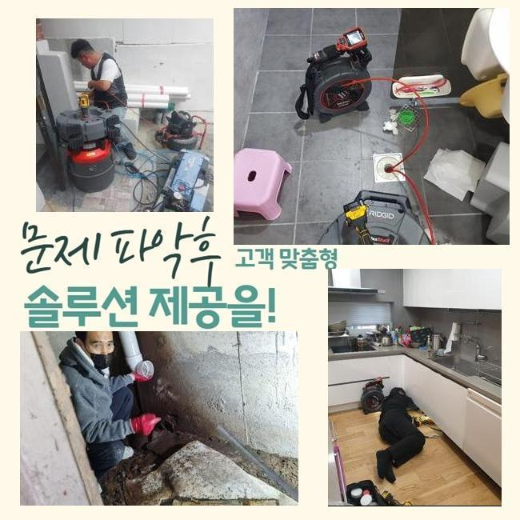
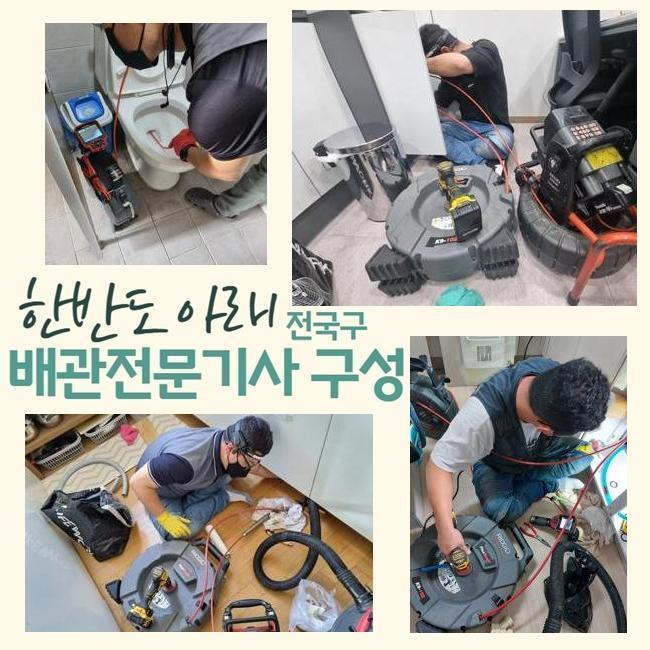
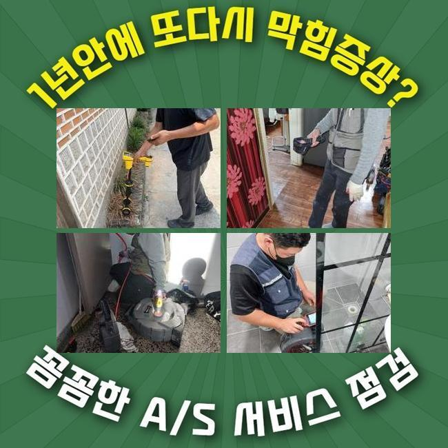
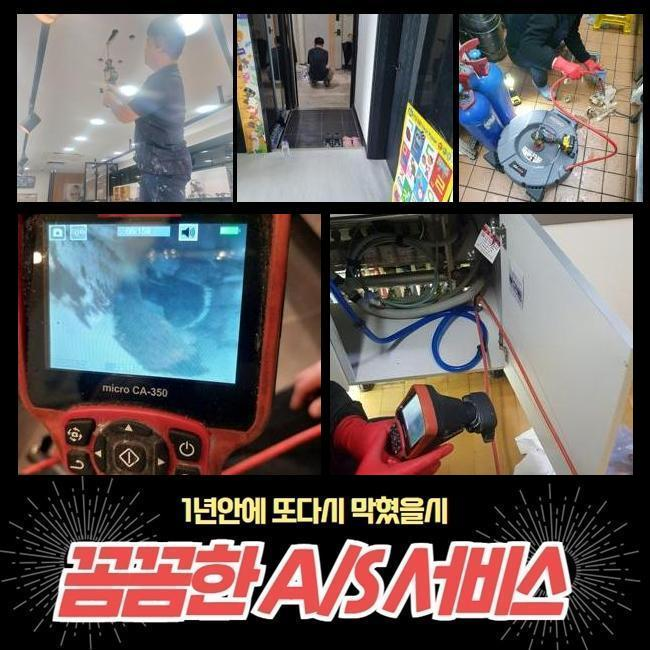
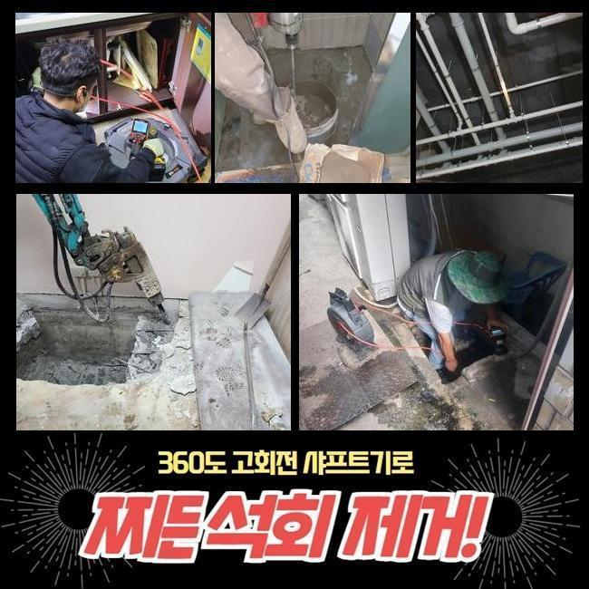

🏠 송파구 오금동싱크대배수관역류 잠실7동 하수구뚫어주는업체 설비
용인 싱크대막힘 전문 시공 후기

📋 작업 개요
- 위치: 용인
- 서비스 유형: 싱크대막힘, 변기막힘, 하수구막힘, 배관막힘, 누수수리, 역류해결, 뚫는업체, 배관청소, 고압세척, 설비공사, 악취차단
- 작업 일시: 2025. 3. 1. 16:16
- 업체명: 하수구수사대 (010-5615-2118)
🔍 문제 상황
송파구 오금동싱크대배수관역류 잠실7동 하수구뚫어주는업체 설비
하수구 마비가 되면 여러가지의 어려움을 느낄 수 있어요
여러 세대가 사는 건물 안의 주방 내의 싱크대가 갑작스럽게 찌꺼기가 차서 물 이동이 멈추는 문제들도 흔하며 변기설비나 바닥 배수구 세탁공간에 물이 차올라서 정상 사용에 문제가 도래할 수 있는 부분입니다
아파트 주민으로부터 의뢰를 받은 상황이라면 세대 내 배관이 막힌 것이니 실내 쪽에서 뚫는 장치들을 돌려서 해소합니다
공용으로 쓰는 메인관로는 아파트의 경우라면 결함이 없는지 검토하기 위하여 규칙적으로 배관 속을 정리해주니 이 부분이 말썽을 부리는 경우는 그나마 적은 편이에요
영업장이 자리한 빌딩이면 하수관의 곤란이 일어날 확률이 아파트에 비해서는 높게 나타납니다
이번 막힘 케이스는 상업 건물에 설치된 주요배관이 막히는 바람에 공용 화장실과 가게 안의 배수마저 힘들어져서 얼른 뭐 때문인지 봐달라고 방문해 주시게 된겁니다
면밀히 관찰해보니 주차장 천장 측에 내장된 메인 배수로가 있는 장소가 파악돼서 진행을 시작했습니다
이 설비에 장애가 생기면 호실 안에 포함된 가지관의 문제라고 추정하는 것 보다는 더 굵은 배관로에 파손부가 일어났거나 혹은 쓰레기가 들어차서 배수장치가 불량할 가능성이 농후합니다

🔎 원인 분석
💡 전문가 진단: 정밀 진단 장비를 사용하여 슬러지의 고착 여부를 판명하고 타격/세척 작업을 실시했습니다.
많은 양의 하수가 모여드는 배관 먼저 길을 만들고 규격이 더 축소된 파이프 내까지 정화합니다
천장 외장재에 숨어있는 배관 통로였기에 고공사다리를 두고 고쳐내기로 다짐하고 하수도 폐쇄 문제 처리를 도와줄 장치들을 구상하여 가져갔습니다
위쪽만 관통한다고 해도 여전히 안쪽 깊숙이는 처치되지 못해서 메인배관을 수리할 시 파이프라인 전체를 긁어내는 작업을 해줘야 합니다
소재구를 직접 찾아서 협소하다면 타공도 추가해서 조치를 취할 수 있을 법한 작업 환경을 만듭니다
내시경 기기라는 카메라로 시각적으로 확인하기 어려운 배관 실황을 봐주기로 했습니다
내제된 오물의 양과 방해 요인이 되었던 대상에 관하여 시공에 뛰어들기 전 판단해야 작업의 노선을 정할 수 있게 됩니다
메인 배관 상의 문제는 파이프의 사이즈가 대형에 속하기 때문에 일반 주택 현장에 찾아갔을 때 주로 구동하게 되는 석션장비를 돌려서는 나아질 수 없어요
자바라 줄이 저 아래까지 진입하지 못해서 찌꺼기를 모으기엔 집수통이 모자라요
기름 슬러지를 분쇄해서 뚫어내는 역할을 담당해주는 샤프트기 마찬가지로 오래 걸리며 구멍도 많이 뚫어야 해서 곤란할 것 같았어요

🔧 작업 과정
상가건물 내부의 하수도 통수과정이 이뤄지지 못하면 빠른 세정에 들어가서 시스템 복구를 해줘야 합니다
통쾌한 물살을 쏘면서 여기저기에 붙어있는 찌꺼기를 싹 쓸려나갈 수 있도록 세정해서 배수로 안을 장애물 없는 환경으로 만들어야 근원적인 문제들을 처리해 낼 수 있습니다
하수구가 만원사태로 차올랐다면 본격적인 청소작업을 실시하기가 힘들어 질 수 있으니 우선 긴 몸체의 스프링기로 봉인되어버린 파트를 틈이 나오도록 처리해서 순환이 되도록 조성한 후에 본단계인 하수구 세척을 시작하는게 낫겠다 싶었습니다
본장비를 도달시키기 위해 기름기가 빼곡한 지점에 접근성을 향상시키는 경로를 확보했습니다
지금 소개하는 상가 건물은 여러 종류의 식당 매장들이 성황리에 운영 중이었고 그만큼 기름기도 많이 배출되고 누적되어서 배수관 속에 기름막이 여러 겹 쌓여 있었습니다
기름막은 뜨거운 물을 써도 녹아나지 않으므로 끈적함이 사라지면 석회물질로 변해서 더 공고하게 결합되는 대상으로 전락합니다
고착물이 되어버리기 전에 스케일링을 해주지 않고 누적되는걸 내버려둔다면 차곡차곡 관로를 메우다가 오염구간이 점차 확장돼서 경로가 완전히 차단돼서 물의 흐름이 영영 되지 않을지도 모릅니다
유분기가 많은 기름기를 조속히 없애는 기법은 고압세척 장비이며 높은 출력 덕분에 이번에도 순조롭게 더러워진 하수 배관을 맑게 전환해줄 수 있었습니다
한몸처럼 붙어있던 오물이 물살에 휩쓸려서 점차 정리되는 현황을 카메라 장치를 넣어서 검사하면서 진행해나갔어요
일부 장부는 튕겨져 나오던 대규모의 집합물질이 조금씩 소강되어졌고 크기가 작은 조각들만 떠 있는 모습이었습니다
일단 고압세척을 해야한다고 결정나면 대부분의 케이스에는 찌꺼기가 말라붙은 곳들을 모조리 세척을 해주어야만 하수를 못쓸 재막힘과 같은 불상사가 일어나지 않습니다
다년간 몸을 불려왔을 슬러지를 고압수로 없애버리고 꾸준히 활용해온 내시경으로 다양한 구간들을 탐색하며 깨끗한 상태로 탈바꿈됐나 봤습니다
초반에는 하수가 내려갈 공백이 보이지 않을만큼 오염이 됐었던 시설물이지만 여러 장비를 활용한 업무를 해준 이후에는 찌꺼기들이 완전 해체된 쾌적함을 느낄 수 있었습니다
추가적 막힘이 있는지 보려고 수도꼭지를 틀어서 물을 흘려보내면서 방해 없이 흘러나가는 완전히 차원이 달라진 성능을 면밀하게 검토한 이후에야 잘 뚫렸다고 알려드렸습니다


✅ 작업 완료
원활한 접근성을 위해 피치 못하게 타공을 해줬던 구역들은 기록해뒀다가 배관용 테이프를 가지고 빈틈없이 감싸줘서 누수이슈가 터지지 않도록 깔끔하게 관리해 드렸습니다!
올스탑이 되어버린 배수구문제로 많은 불편함을 겪고 있던 상가빌딩 중의 매장 안에서 한자리에 물이 고정된데다 역방향으로 고인물이 솟구치는 일까지 신통방통하게 고쳐드리고 사무실로 향했습니다
일반 가정집보다 훨씬 큰 현장은 쉬운 방식으로 낫기 어려운 사안이며 단순하게 접근해서 자가조치를 무분별하게 취하다간 파이프에 손상이 가는 경우도 왕왕 있습니다
가정집도 그렇지만 특수한 공간이나 상업시설이라도 적절한 원인 분석과 시공으로 정상기능을 복구시켜드리니 안정적 설비의 이점을 누려보세요




⚠️ 베란다 누수 및 방수 관리 방법
- ✅ 비가 많이 올 때 창틀 주변이나 아래층 천장에 얼룩이 생기는지 정기적으로 확인해 보세요.
- ✅ 우수관 주변 실리콘 마감이 들뜨거나 깨진 틈새가 있는지 손상 여부를 수시로 체크하세요.
- ✅ 베란다 바닥 타일의 줄눈(메지)이 소실되면 그 틈으로 물이 침투하여 누수가 유발됩니다.
- ✅ 누수 의심 증상 발견 시 방치하면 아래층 손실이 커지므로 즉시 전문가의 진단을 받으십시오.
💡 핵심 정리
- 확실한 장비 작업(내시경 점검 및 샤프트 스케일링)으로 원인을 뿌리 뽑습니다.
- 작업 후 1년 이내에 동일한 부위 재발 시 100% 무상 A/S 서비스를 보장합니다.
- 서울 · 경기 · 인천 전 지역에 24시간 언제든 긴급 출동할 수 있도록 항시 대기 중입니다.
❓ 자주 묻는 질문 (FAQ)
🚨 용인 싱크대막힘 문제로 고민이신가요?
정확한 원인 진단과 확실한 시공으로 재발 없는 해결을 약속드립니다.
24시간 긴급 출동 | 서울 · 경기 · 인천 전지역 | 1년 내 재발 시 무상 A/S